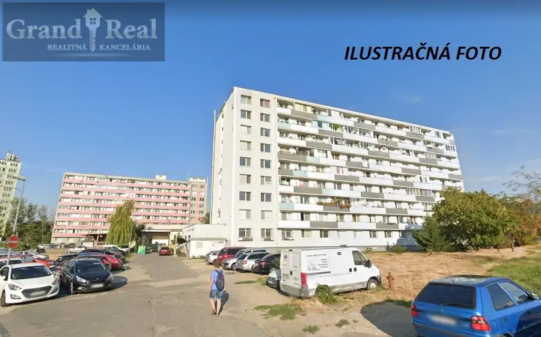
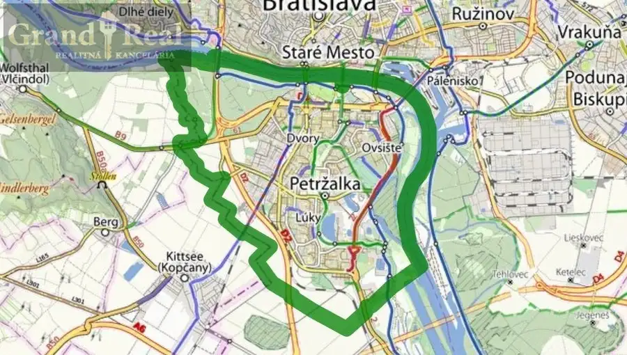
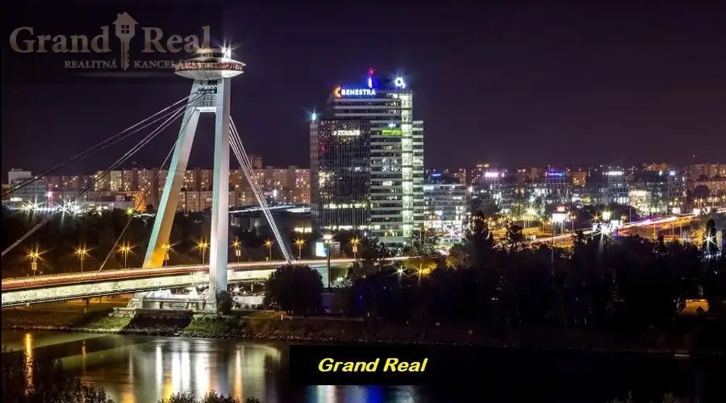
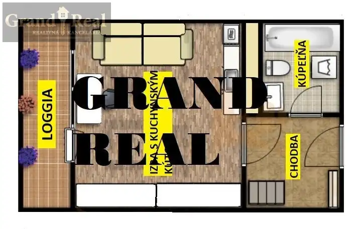

Predaj · Byt
DOPYT - Garzónka s loggiou, Bratislava - Vajnory, Rybničná ulica
Vajnory, Bratislava
100 000 €3 571 € za m²

- Plocha28 m²
- Poschodie4. z 9
- StavČiastočná rekonštrukcia
O nehnuteľnosti
Pre klienta s hotovosťou hľadáme na kúpu garzónku na Rybničnej ulici v Bratislave. Cena cca 100.000 Eur, samozrejme cena závisí hlavne od stavu (rekonštrukcie) bytu.Financovanie vlastnými prostriedkami.Za ponuku ďakujemeKontakt: 0903 148 589, benus@grandreal.eu
Parametre
- Cena vrátane energií
- Nie
- Druh
- Garsónka
- Dátum zverejnenia
- 03. 03. 2026
- Energetický certifikát budovy
- nie je
- Podlažie
- 4
- Počet nadzemných podlaží
- 9
- Rok výstavby
- 1972
- Stav nehnuteľnosti
- Čiastočná rekonštrukcia
- Typ
- Predaj
- Typ konštrukcie
- Panelová
- Vybavenie
- Výťah
- Úžitková plocha
- 28 m²
Kde to je


Ďalšie ponuky
Celá ponukaMohlo by Vás zaujímať

Komerčné priestoryNové 145 000 €Nebytový priestor, Bratislava - Petržalka, DOPYT Petržalka, Bratislava 25 m²
BytNové 180 000 €DOPYT - 1 izbový byt v Petržalke Petržalka, Bratislava 1-izbový38 m²2. podlažie
BytNové Cena na vyžádáníGarzónka s loggiou, Bratislava - Petržalka. DOPYT! Petržalka, Bratislava 28 m²3. podlažie